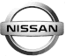

Nissan

A Nissan é uma fabricante global de veículos com uma linha completa, que vende mais de 60 modelos sob as marcas Nissan, INFINITI e Datsun. No Ano Fiscal de 2018, finalizado em março de 2019, a empresa comercializou 5,52 milhões de veículos no mundo, gerando uma receita de 11,6 trilhões de ienes. A sede global da Nissan, em Yokohama, Japão, gerencia operações em seis regiões: Ásia & Oceania; África, Oriente Médio e Índia; China; Europa; América Latina; e América do Norte. A Nissan é parceira da fabricante francesa Renault desde 1999 e adquiriu uma participação de 34% na Mitsubishi Motors em 2016. A Renault-Nissan-Mitsubishi é hoje a maior parceria automotiva do mundo, com vendas combinadas de mais de 10,76 milhões de veículos no ano calendário de 2018.
A Nissan, uma das maiores fabricantes de veículos do mundo, está presente no Brasil desde 2000 e opera hoje com mais de 180 concessionárias em todos os estados do País. A empresa investiu R$ 2,6 bilhões na construção de seu Complexo Industrial próprio em Resende, no estado do Rio de Janeiro. Esta unidade industrial foi inaugurada em abril de 2014 e tem a capacidade de produzir 200 mil carros e 200 mil motores por ano. Atualmente, a unidade industrial fabrica o Novo Nissan Kicks, Nissan Versa-V-Drive, além dos motores flexfuel 1.0 12V e 1.6 16V. A Nissan tem cerca de 2.000 funcionários diretos no Brasil.
A Nissan tem sido parceira da fabricante francesa Renault, sob a Aliança Renault-Nissan, desde 1999. Em 2016, a Nissan adquiriu uma participação de 34% na Mitsubishi Motors, formando a Aliança Renault-Nissan-Mitsubishi, que hoje é a maior parceria automotiva do mundo. A Aliança tem mais de 450 mil funcionários pelo mundo, 122 fábricas em todos os continentes e vendas combinadas de mais de 10,76 milhões de veículos no ano calendário de 2018, sendo mais de 740 mil veículos puramente elétricos (a cada 9 vendidos 1 é elétrico).

Audi

BMW

Ferrari

Lamborghini
Mercedes